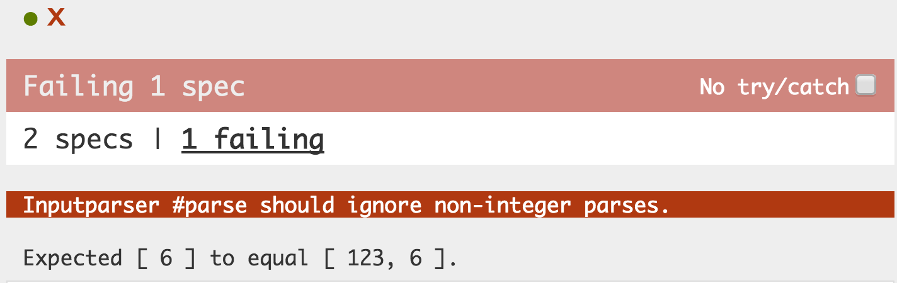

ThoughtWorks®
Testable JavaScript
Wang Ni
How to test JavaScript code ?
Any one know Jasmine ?

Behavior-driven development framework for testing JavaScript code.
And Mocha ?
A feature-rich JavaScript test framework running on node.js and the browser, making asynchronous testing simple and fun.

TODO
How to test this code ?
Writing testable JavaScript
When '.todo-add' is changed
- TodoList.add( todoMessage )
- ThingsTodo.update( TodoList.count() )
- clean up
When 'add' is called
- TodoItem.generate( todoMessage )
- TodoList.append( todoItem )
TodoItem.generate
- generate todo item element
- handle event: checked
- handle event: close
When 'update' is called
- update with new number